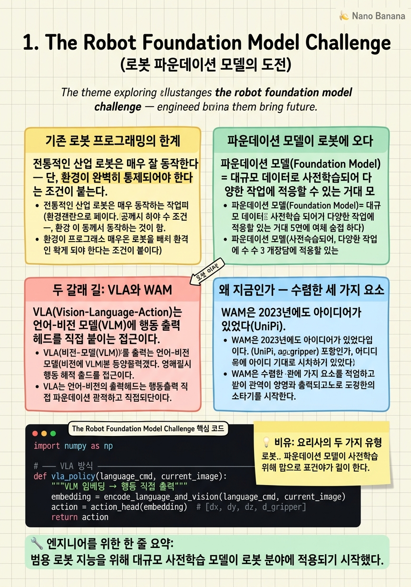

The Robot Foundation Model Challenge

🎯 학습 목표
- 기존 로봇 프로그래밍 방식의 한계를 설명할 수 있다
- 파운데이션 모델이 로봇 분야에 필요한 이유를 이해한다
- VLA와 WAM의 핵심 차이를 한 문장으로 말할 수 있다
- 언어-행동 그라운딩 갭(grounding gap)이 무엇인지 설명할 수 있다
- 이 코스의 10챕터 흐름을 파악한다
로봇에게 "컵을 집어줘"라고 말하면 바로 실행되는 세상을 상상해보자. 그런 세상을 만들기 위해 2023년 이후 AI 연구자들은 두 가지 근본적으로 다른 길을 걷고 있다. 하나는 언어를 행동으로 직접 연결하는 VLA(Vision-Language-Action) 모델이고, 다른 하나는 비디오로 세계를 상상한 뒤 행동을 이끌어내는 WAM(World-Action Model)이다.
이 챕터는 코스 전체의 지도다. 기존 로봇 프로그래밍의 한계에서 출발해, 왜 대규모 언어 모델의 등장이 로봇 분야를 뒤흔들었는지, 그리고 두 접근법이 각각 어떤 문제를 풀려는지를 설명한다.
처음 접하는 독자라도 핵심 직관을 파악할 수 있도록 기술 세부 사항보다 동기와 직관에 집중한다.
핵심 내용
기존 로봇 프로그래밍의 한계
전통적인 산업 로봇은 매우 잘 동작한다 — 단, 환경이 완벽히 통제되어야 한다는 조건이 붙는다. 공장 조립 라인에서 로봇은 0.1mm 오차 없이 볼트를 조이지만, 컵이 5cm만 옆으로 옮겨져도 멈춰버린다. 로봇은 "컵을 잡는 법"을 배운 것이 아니라 특정 좌표로 팔을 움직이는 법을 하드코딩받았기 때문이다.
이 문제를 해결하기 위해 연구자들은 모방 학습(Imitation Learning)을 도입했다. 사람이 직접 로봇을 움직여 보여주면 로봇이 그 궤적을 학습하는 방식이다. 효과는 있었지만 새로운 문제가 생겼다 — 데이터 부족. 특정 작업 하나를 학습하려면 수백~수천 번의 시연이 필요하고, 새 작업마다 이 과정을 반복해야 했다.
GPT 같은 대규모 언어 모델(LLM)이 인터넷 텍스트 수십억 개를 학습해 범용 지능의 씨앗을 보여주면서 로봇 연구자들은 자연스럽게 물었다: "인터넷 수준의 비디오와 로봇 데이터로 사전학습하면 범용 로봇 지능을 만들 수 있지 않을까?" 이것이 로봇 파운데이션 모델 연구의 시작이다.
파운데이션 모델이 로봇에 오다
파운데이션 모델(Foundation Model) = 대규모 데이터로 사전학습되어 다양한 작업에 적응할 수 있는 거대 모델. GPT-4가 글쓰기·번역·코딩을 모두 할 수 있듯, 로봇 파운데이션 모델은 설거지·청소·요리를 단일 모델로 수행하는 것이 목표다.
RT-2(Robotics Transformer 2)는 2023년 Google DeepMind가 발표한 초기 성공 사례다. VLM(Vision-Language Model)에 로봇 행동 데이터를 추가로 학습시켜, "빨간 사과를 집어 도마에 올려줘" 같은 명령을 처음 보는 상황에서도 수행하는 능력을 보여줬다.
하지만 파운데이션 모델을 로봇에 적용할 때 근본적인 문제가 드러났다. 언어 모델은 "컵"이 무엇인지는 알지만, 손가락으로 컵을 잡으려면 손목을 얼마나 돌려야 하는지는 모른다. 언어와 물리적 행동 사이의 이 간극을 그라운딩 갭(Grounding Gap)이라고 부른다. 이 갭을 어떻게 메우느냐에 따라 VLA와 WAM이 갈린다.
두 갈래 길: VLA와 WAM
VLA(Vision-Language-Action)는 언어-비전 모델(VLM)에 행동 출력 헤드를 직접 붙이는 접근이다. 언어가 목표를 지정하고, 모델이 로봇 팔의 관절 각도·그리퍼 개폐 등의 저수준 행동을 직접 출력한다. Pi-0, OpenVLA 등이 대표적이다. 장점은 추론이 빠르고 구조가 단순하다는 것이다.
WAM(World-Action Model)은 경로가 다르다. "어떻게 행동할지"를 바로 출력하는 대신, 먼저 "다음에 어떤 장면이 펼쳐질지"를 비디오로 상상한다. 그리고 그 상상된 미래 비디오에서 역으로 행동을 추출하거나, 비디오와 행동을 동시에 생성한다. 비디오 파운데이션 모델(Wan, Cosmos)이 강력해진 2025~2026년에 본격적으로 등장한 새 패러다임이다.
| 구분 | VLA | WAM |
|---|---|---|
| 사전학습 백본 | VLM (언어+비전) | 비디오 생성 모델 |
| 해소하려는 갭 | 언어→행동 | 비디오→행동 |
| 추론 시 비디오 생성 | 없음 | 있음 (일부 방식) |
| 상대적 추론 속도 | 빠름 (~190ms) | 느림 (~590ms) |
왜 지금인가 — 수렴한 세 가지 요소
WAM은 2023년에도 아이디어가 있었다(UniPi). 그런데 왜 2026년에야 주목받는가? 세 가지 조건이 동시에 충족됐기 때문이다.
첫째, 강력한 오픈소스 비디오 백본의 등장. Wan 2.1, Cosmos 1.0 같은 DiT 기반 비디오 모델이 공개되면서 연구자들이 파인튜닝만으로 WAM을 만들 수 있게 됐다.
둘째, 더 나은 행동 표현 방법. 행동 청크(action chunk) + 플로우 매칭(flow matching) 조합이 기존의 단계별 MLP를 압도한다.
셋째, 로봇 데이터 생태계 성숙. DROID(76k 에피소드) 같은 대규모 크로스-로봇 데이터셋이 공개되어 사전학습-파인튜닝 파이프라인이 현실적이 됐다. 2023년의 UniPi가 재현 불가능했던 이유(CNN 비디오 확산 모델로 ~167 ZFLOPs 사전학습 필요)가 이제는 해소됐다.
💡 비유로 이해하기
레스토랑에 두 명의 요리사가 있다. 한 명은 레시피 마스터: 수천 가지 레시피를 외우고, 손님이 "파스타 알리오 올리오"라고 말하면 즉시 손이 움직인다. 언어(메뉴 이름)와 동작(칼질·볶기) 사이의 연결이 직접적이다. 이것이 VLA다.
다른 요리사는 상상 요리사: 요리 영상을 수만 시간 보면서 "재료를 볶으면 어떻게 되는지", "기름이 뜨거워지면 연기가 나는지"를 뇌 속 시뮬레이터로 익혔다. 새 요리를 만들 때는 먼저 머릿속으로 완성되는 장면을 상상하고, 그 상상에서 역으로 손의 움직임을 이끌어낸다. 이것이 WAM이다.
레시피 마스터는 빠르다. 하지만 처음 보는 재료가 오거나 오믈렛 팬이 없으면 당황한다. 상상 요리사는 느리지만, 처음 보는 재료라도 "이걸 볶으면 이렇게 되겠지"라고 추론할 수 있다.
💻 코드 예시
두 패러다임의 차이를 가장 단순하게 코드로 표현해보자. VLA는 언어+이미지 → 행동을 직접 매핑하고, WAM은 언어+이미지 → 미래 장면 예측 → 행동 추출의 두 단계를 거친다.
import numpy as np
# ─── VLA 방식 ────────────────────────────────────
def vla_policy(language_cmd, current_image):
"""VLM 임베딩 → 행동 직접 출력"""
embedding = encode_language_and_vision(language_cmd, current_image)
action = action_head(embedding) # [dx, dy, dz, d_gripper]
return action
# ─── WAM 방식 ────────────────────────────────────
def wam_policy(language_cmd, current_image):
# Phase 1: 비디오 백본으로 미래 장면을 상상
future_frames = video_backbone.imagine(
condition=current_image,
goal=language_cmd,
num_frames=16
)
# Phase 2: 상상된 비디오에서 행동 역산
action = inverse_dynamics_model(
current_frame=current_image,
future_frame=future_frames[-1]
)
return action
# 핵심 차이:
# VLA: 언어 → 행동 (직접 경로)
# WAM: 언어 → 미래 비디오 → 행동 (우회 경로)vla_policy는 언어와 이미지를 임베딩으로 합쳐 행동을 직접 출력한다. wam_policy는 먼저 video_backbone.imagine()으로 미래 프레임들을 생성하고, inverse_dynamics_model()로 현재→미래 전환에 필요한 행동을 역산한다. 이 두 단계 구조가 WAM의 골격이다.
🏭 현업에서의 평가
✅ 시니어가 보는 것
- VLA와 WAM의 grounding gap을 구체적으로 설명할 수 있는가
- 어떤 작업/환경에서 WAM이 VLA보다 유리한지 판단할 수 있는가
- 두 패러다임의 추론 속도·학습 비용 차이를 수치로 알고 있는가
⚠️ 레드 플래그
- "WAM이 VLA보다 무조건 좋다"고 단정짓는 것 — 아직 열린 경쟁
- 비디오 생성 비용(~51 ZFLOPs)을 모르고 WAM을 가볍게 취급하는 것
🎤 예상 인터뷰 질문
- VLA 모델에서 언어-행동 그라운딩 갭이 발생하는 구체적인 이유는 무엇인가요?
- WAM이 그라운딩 갭을 줄인다는 가설의 근거는 무엇이며, 어떤 반례가 있나요?
- 프로덕션 로봇 시스템에서 WAM의 590ms 추론 지연을 허용 가능하게 만들려면 어떤 방법이 있나요?
✨ 핵심 요약
파운데이션 모델의 꿈
범용 로봇 지능을 위해 대규모 사전학습 모델이 로봇 분야에 적용되기 시작했다.
그라운딩 갭
언어와 물리적 행동 사이의 근본 간극 — VLA와 WAM이 이를 다르게 해결한다.
VLA의 직접성
VLM에 행동 헤드를 붙여 언어→행동을 직접 매핑. 빠르지만 그라운딩 갭이 있다.
WAM의 우회 전략
비디오로 미래를 먼저 상상하고, 그 상상에서 행동을 추출한다.
세 가지 수렴 요소
오픈소스 비디오 백본 + 행동 청크/플로우매칭 + 대규모 로봇 데이터셋이 동시에 성숙했다.
하이브리드가 답?
Pi-0.7, Being-H0.7 등 최신 연구는 두 패러다임의 장점을 합치는 방향으로 수렴 중이다.